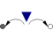

Torque2Input signal acting as torque on two flanges |

|
Information
This information is part of the Modelica Standard Library maintained by the Modelica Association.
The input signal tau defines an external torque in [Nm] which acts at both flange connectors, i.e., the components connected to these flanges are driven by torque tau.
The input signal can be provided from one of the signal generator blocks of Modelica.Blocks.Sources.
Connectors (3)
Used in Examples (1)
|
Modelica.Mechanics.MultiBody.Examples.Elementary Rolling wheel set that is driven by torques driving the wheels |